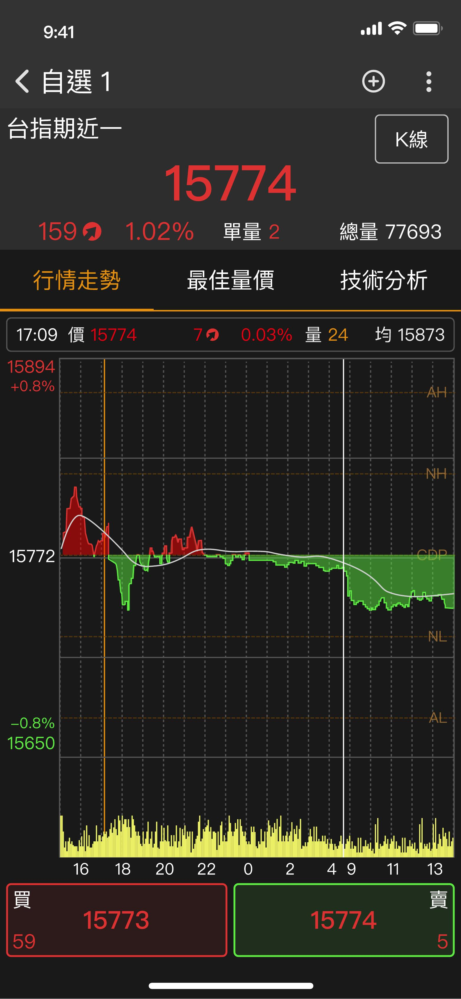
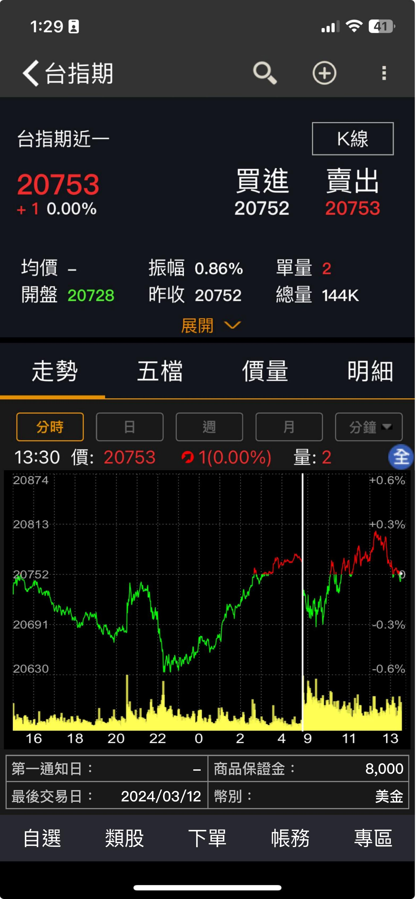
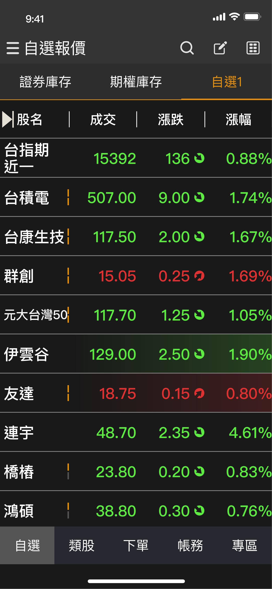
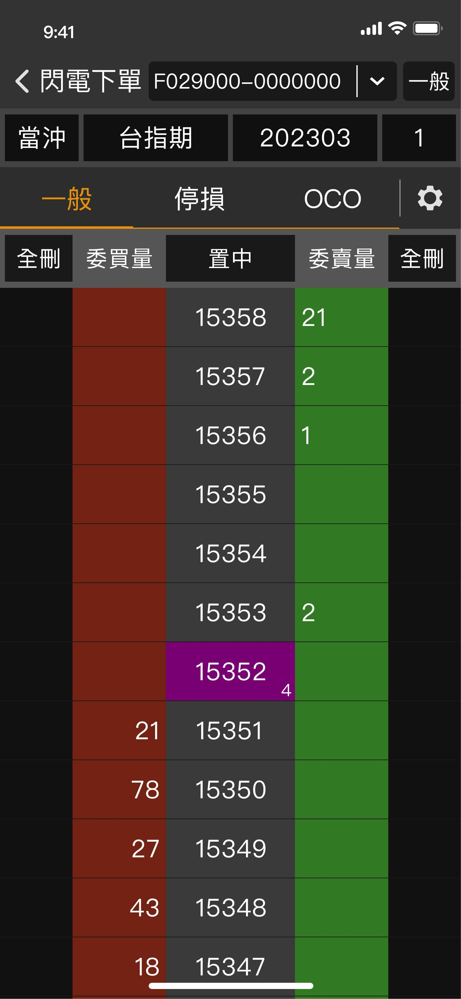
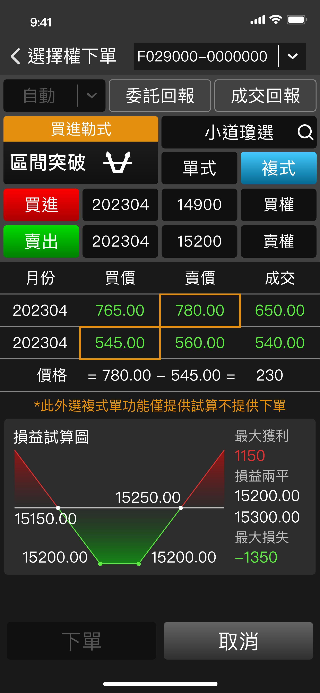
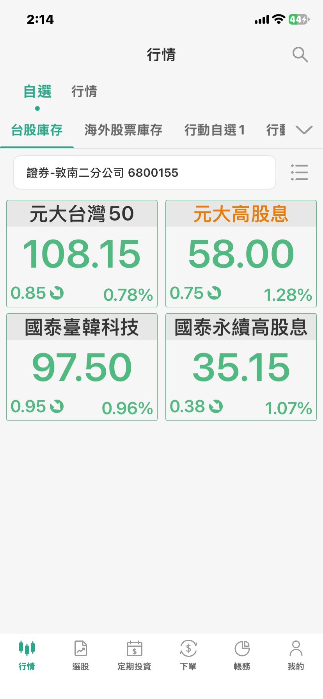
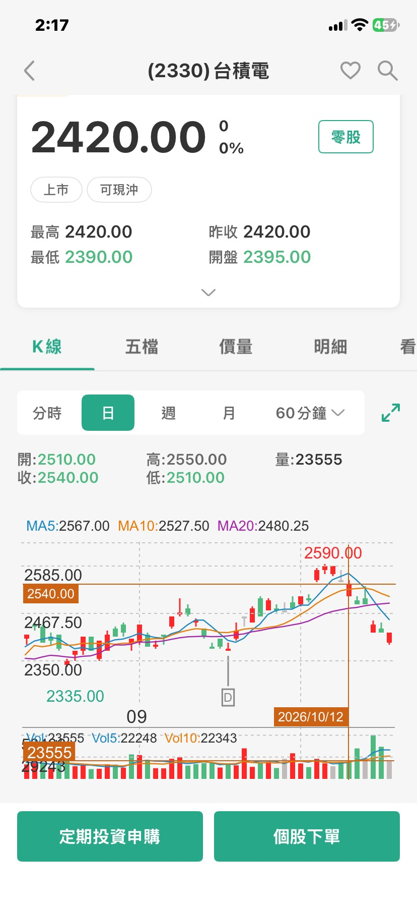
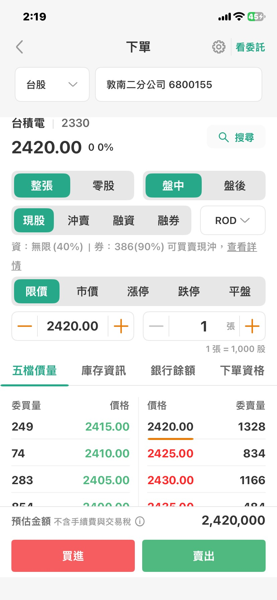

Case Study · Frontier Projects
Owning the largest product in my portfolio — an SDK platform that let brokerage and futures firms assemble their own branded trading app, sold through direct presales and managed across six live clients
Summary
mBroker was the largest product I managed at Systex. It's an SDK-based platform that lets a brokerage or futures firm build its own proprietary trading app — assembled from a library of pre-built quote, chart, and trading modules rather than written from scratch, with custom development available for anything outside that library. I owned it end-to-end: pitching the platform directly to prospective brokerage clients, managing the relationship and roadmap for six live clients serving over 1.2 million end users, and deciding which features graduated from our in-house app into the next twice-yearly standard release.
Note — mBroker is built for the Taiwanese market, so the app screenshots throughout this case study remain in Traditional Chinese, their original language.
Background & Challenge
mBroker didn't start as a proprietary-app platform — it was the result of eight years of incremental evolution inside Systex's brokerage business, starting from a single customized app in 2015, through multi-platform support, e-counter integration, and a real-time US-stock sub-brokerage launch in 2021. Each step added capability, but clients were still essentially renting a shared app experience.
The shift I managed was the next one: letting a brokerage stop renting and start owning. Instead of every client running a near-identical app with their logo swapped in, mBroker let each client assemble its own app from our component library, add custom-built features on top, and ship it under its own brand — while we kept operating the data, infrastructure, and compliance layer underneath. That's the "second growth curve" this platform created for the business, and the one I was responsible for selling and running.
How the Platform Works
mBroker's SDK is split into a Native layer and a Hybrid (webview) layer. Native components cover anything latency-sensitive — five-tier quotes, trend charts, technical analysis — so the UI stays consistent and fast regardless of which client is running it. Hybrid components cover service content that changes often, which meant a client could get a content update without waiting on an app-store release cycle.
Same data, two different looks
Every component ships in two modes: a version with our standard UI that a client can drop straight in, or a "headless" version that hands the client raw data so their own design team builds the UI around it. That flexibility was the core of what I pitched — a client wasn't locked into our look, only our data and infrastructure underneath it.
Same underlying quote data, two different clients — our default UI (left) versus a client's own custom-built screen (right).


Underneath that component library sits a genuinely large data footprint — real-time quotes and trading access across both domestic and international markets, post-market fundamentals and historical data, and a curated financial news feed. Selling mBroker meant being able to speak to that depth of coverage as confidently as the UI.
That depth shows up in how far a client could push custom features on top of the SDK — from a day-trading watchlist with live up/down indicators, to a one-tap futures order ticket, to a full profit/loss simulator for multi-leg options strategies.



Our largest client took that flexibility furthest, rebuilding its watchlist, individual-stock detail, and order-entry screens entirely around its own branding and layout on top of mBroker's components — real proof that a client could own the full experience, not just reskin a template.



Presales & Client Engagement
Because mBroker is a B2B platform, a large part of my role had nothing to do with screens: it was presales. I built and delivered the pitch deck myself, walked prospective brokerage and futures clients through the SDK's capabilities and fee structure, and negotiated the commercial terms that turned a pitch into a signed client. Over my time on the product, that work brought on six live clients: Cathay Securities, Shin Kong International Securities, Yung Shin Securities, Yung Chuan Securities, President Futures Corp., and Concord Futures Corp.
Each client could choose between two delivery models depending on how much of their own design and engineering capacity they wanted to commit. I used this standard SOP in every pitch so prospective clients could see exactly what they'd be responsible for under each path before signing — and so my own team knew what we were committing to deliver.
Independent Development
Client side
Systex side
Client logs in and downloads the quote SDK, post-market API, and chart components to build with
Provided and maintained throughout the client's app development and UAT
Live data access and real-time monitoring once the client deploys to production
Collaborative Development
Client side
No in-house app development team required
Systex side
Builds the app from the client's design
Running It at Scale
Underneath all six client apps runs a shared backend infrastructure built for redundancy and real-time reliability, covering core functions like login, certificates, order placement, and account inquiries — backed by a dedicated test environment so new builds never touch the production path. Keeping six independently-branded clients stable on that shared infrastructure was supported by a team of 100+ R&D engineers and 50 customer-service staff, running a 24-hour monitoring center that watched everything from connection health to data integrity in real time.
I also owned the standard feature roadmap shared across all six clients, released every six months. Rather than guessing what to build next, I used Systex's own in-house app, iWow, as a testing ground: a new idea would ship to iWow first, and if it landed well with that user base, I'd schedule it into the next mBroker standard release — so every client got a feature that had already proven itself, not an untested bet.
New feature ideas ship first to our in-house stock-quote app, where I could observe real usage before committing client budget to it.
I tracked how the feature actually performed with iWow's user base before deciding whether it belonged in the shared roadmap.
Proven features get scheduled into the next six-month mBroker standard update, so all six clients receive the same validated upgrade together.
Outcome & Reflection
By the time I moved on, mBroker was live across six brokerage and futures clients and serving more than 1.2 million end users on a twice-yearly release cycle. Of everything I worked on at Systex, this is the clearest example of the job being bigger than the screens: closing a client meant as much presales and negotiation as it did product thinking, and keeping six clients happy on one shared platform meant constantly weighing one client's custom request against what was good for the roadmap as a whole.
Built and delivered the SDK pitch myself, converting prospective brokerage and futures firms into six signed, live clients
Owned product strategy for a multi-tenant SDK platform serving 1.2 million+ end users across six independently-branded apps
Used our in-house app as a testbed, scheduling only proven features into mBroker's shared six-month release cycle